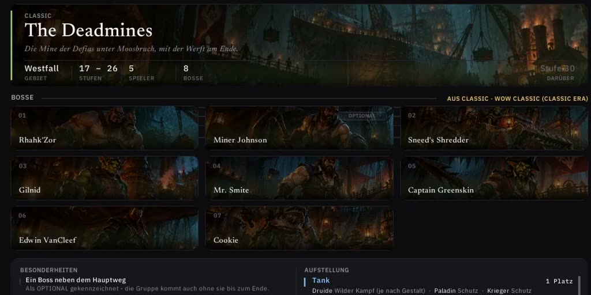
Leveln
Dungeons
Neue und klassische Dungeons in einer Liste, nach Stufe sortiert. Bosskarten mit Beute und Dropchance, Aufstellung der Gruppe, Quests und Eingang auf der Karte.
Das Addon für World of Warcraft: Forever
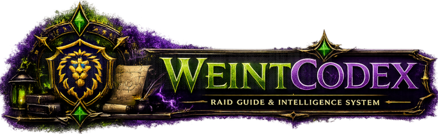
Dungeons, Beute, Berufe, Questpfeil, Komfort-Oberfläche und deine Gilde. Ein Addon, ein Fenster, und alles arbeitet zusammen.
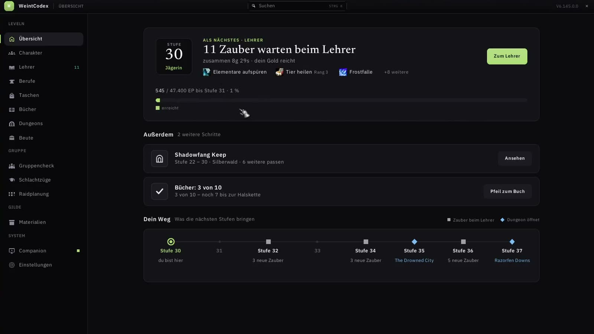
/wc.Alles inklusive
Jedes Modul kennt die anderen: der Questpfeil die Bücher, die Berufe die Auktionspreise, die Dungeons deine Gilde. Ein Klick auf „Im Video“ springt an die passende Stelle.

Leveln
Neue und klassische Dungeons in einer Liste, nach Stufe sortiert. Bosskarten mit Beute und Dropchance, Aufstellung der Gruppe, Quests und Eingang auf der Karte.
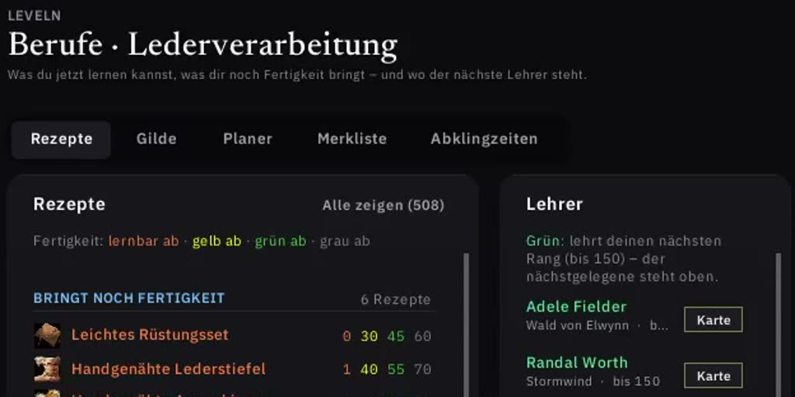
Leveln
Alle Rezepte mit ihren Lehrern, wer in der Gilde was kann, und ob sich das Herstellen lohnt. Fehlt eine Zahl, rät WeintCodex nicht.
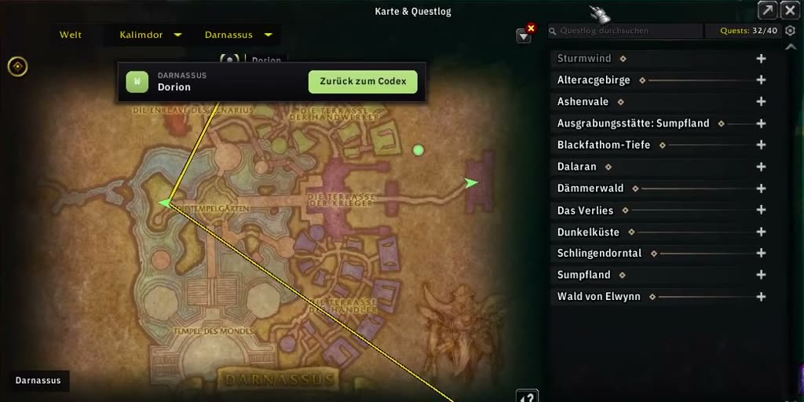
Unterwegs
Klick auf der Karte setzt den Pfeil, mit Entfernung und Ankunftszeit. Instanzeingänge, Questgeber und Bücher lassen sich direkt aus dem Codex anpeilen.
Gilde
Jemand im Discord sieht, dass du ein Rezept kannst, und bestellt. Du nimmst im Spiel an, meldest erledigt oder lehnst ab, auch in der Companion oder im Discord.
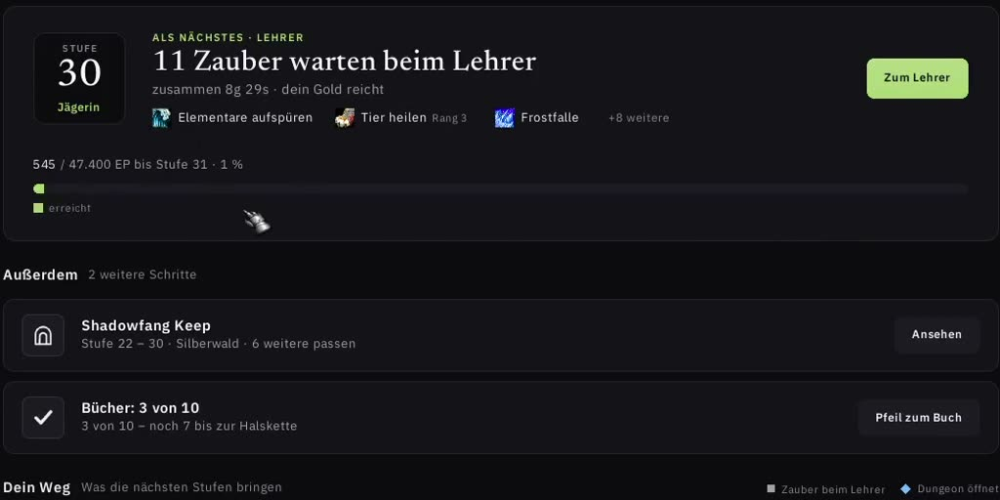
Was als Nächstes ansteht und deine nächsten Stufen auf einen Blick.
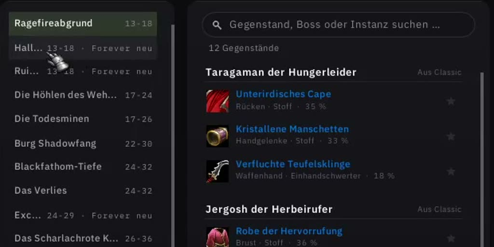
Was in Dungeons, Schlachtzügen, beim Ruf und im PvP zu holen ist, mit Dropchance.
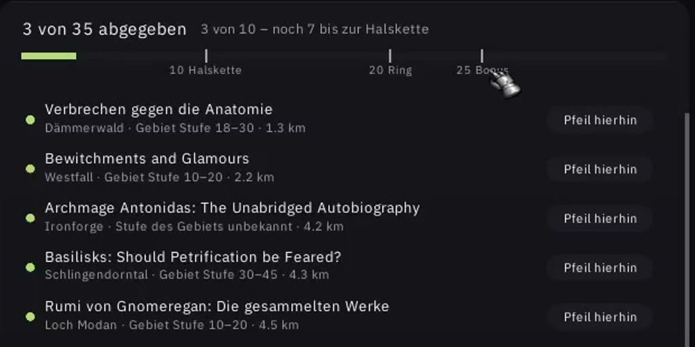
Die Bücher der Bibliothek und Questreihen wie der Gemütliche Schlafsack, mit einem Klick auf den Questpfeil.
Einmal scannen, dann steht der Preis in jedem Tooltip. Auf Wunsch geteilt mit der Gilde.
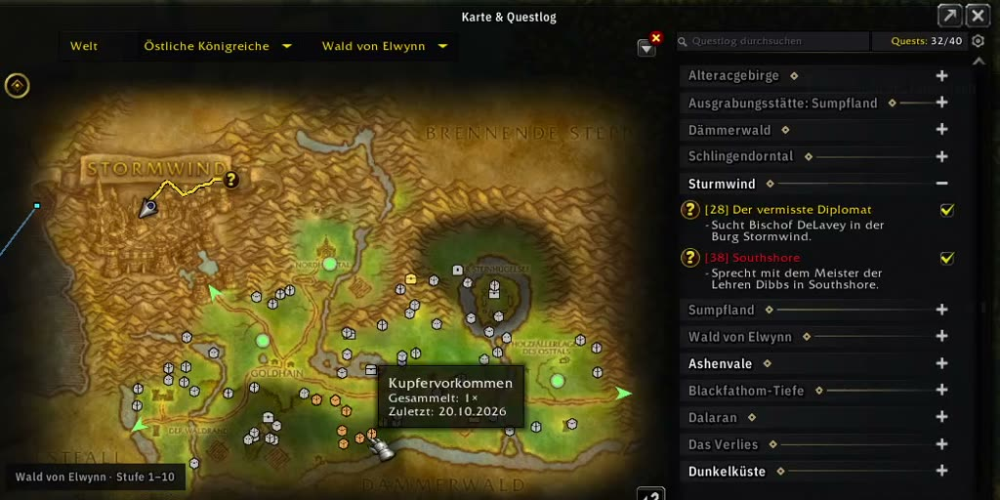
Merkt sich, wo du gesammelt hast. Jeder Punkt stammt aus deinem eigenen Spiel.
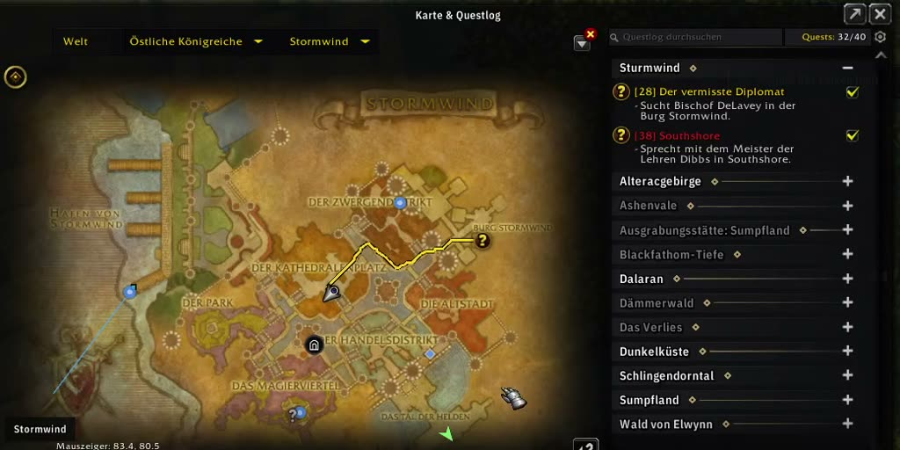
Auch dort, wo du noch nicht warst, abgedunkelt bis du dort bist. Dazu die Eingänge der Instanzen.
Auswerfen, einholen, Beute nehmen. Jeder Druck kommt von dir.
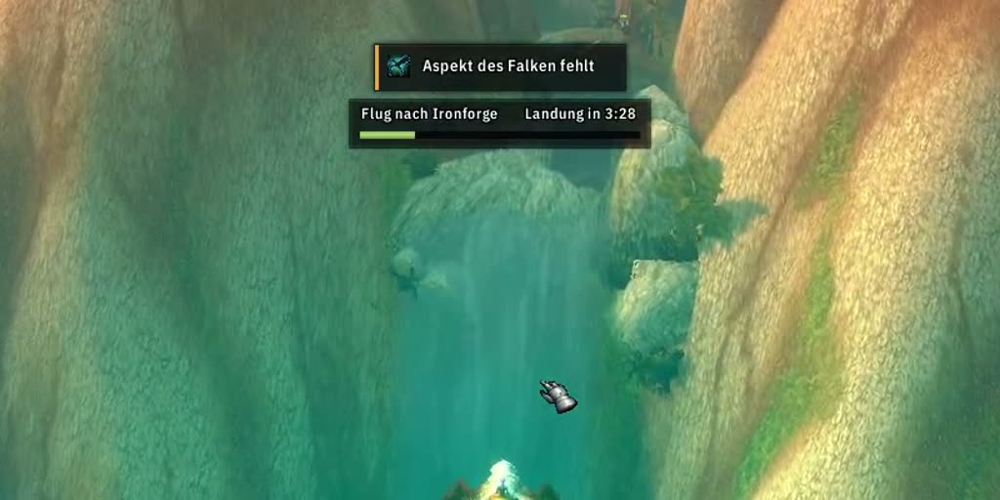
Wann du landest, jeder Zwischenstopp mit Ankunftszeit. Unbekannte Strecken werden gemessen, nicht geschätzt.
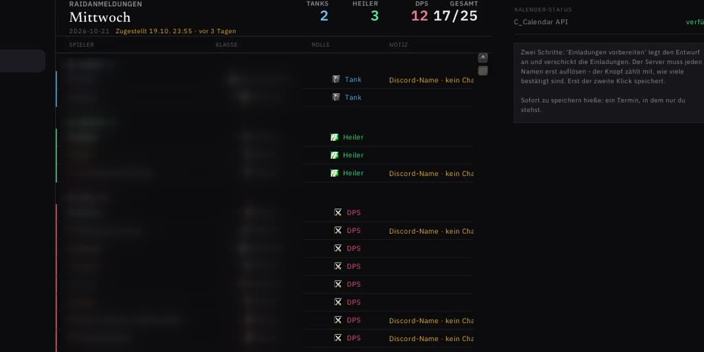
Die Ausrüstung der ganzen Gruppe auf einen Blick: Er bewertet nicht, er zählt. Dazu Termine und Anmeldungen aus dem Discord.
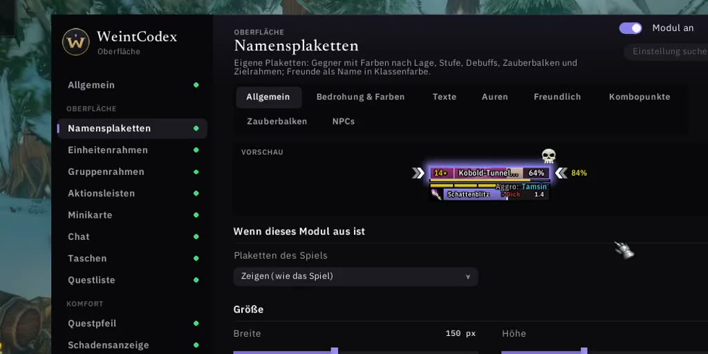
Bedrohung und Markierungen auf einen Blick. Die ganze Oberfläche hat einen Hauptschalter und Profile je Charakter.
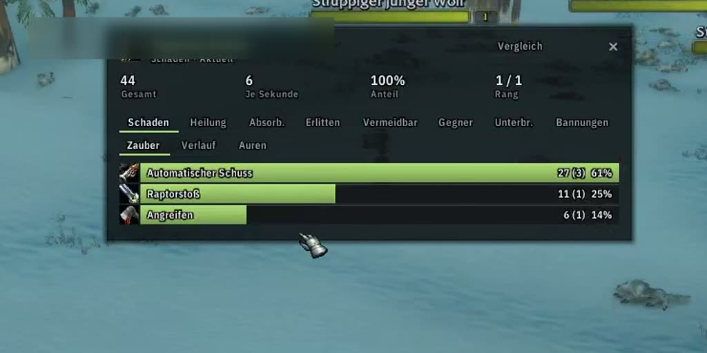
Misst deinen Schaden und den der Gruppe, Kampf für Kampf.
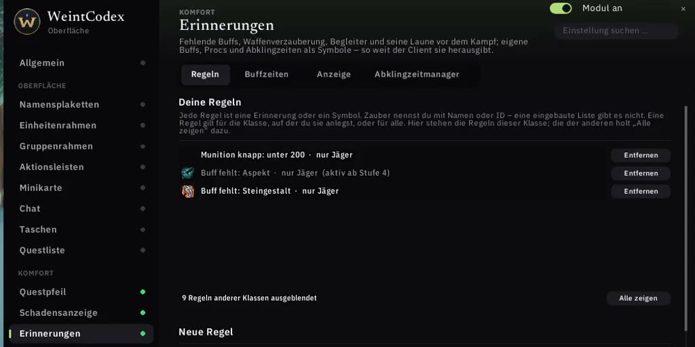
Fehlende Buffs, Waffenöl und Begleiter, bevor der Kampf beginnt.
Nicht wissen, wo etwas steht? Einfach eintippen.
Ehrlich bei den Daten
Forever ist neu, vieles ist noch nicht bekannt. WeintCodex sagt dir deshalb bei jeder Angabe, woher sie stammt, und erfindet nichts dazu.
In 11 Minuten erklärt
Von der Installation bis zum Auftrag aus der Gilde. Spring direkt in das Kapitel, das dich interessiert.
Das Video wird erst nach deinem Klick von YouTube geladen (youtube-nocookie.com). Oder direkt auf YouTube ansehen ↗.
Deine Daten
Das Addon selbst geht nie ins Internet. Was es teilt, geht als Nachricht im Spiel an deine Gilde, und jedes davon hat einen eigenen Schalter.
Drei Teile. Eine Gilde.
Das Addon geht selbst nie ins Internet. Was von außen kommt, bringt die Companion mit.
Das Addon: alles, was du auf dieser Seite gesehen hast.
Installiert WeintCodex, hält es aktuell, sichert vor jedem Update und verbindet Addon und Discord.
Raidtermine, Dungeon-Einladungen, Berufe der Gilde, Aufträge und Taktiken mit /weintboss.
Kostenlos. Für immer.
Der Quellcode liegt offen auf GitHub. Alles, was das Addon mit anderen teilt, etwa Preise oder Rezepte mit der Gilde, kannst du selbst ein- und ausschalten.
Einmal einrichten
Du bekommst WeintCodex über die WeintCompanion. Sie findet deinen WoW-Ordner, installiert das Addon und hält es aktuell.
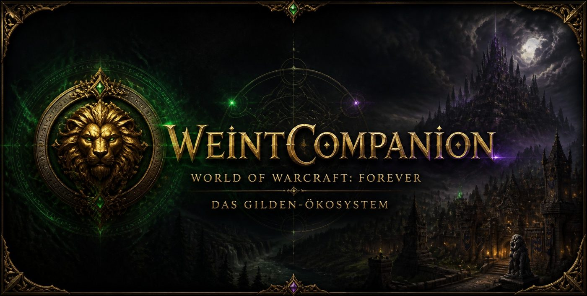
WeintCompanion-Setup.exe herunter und öffne die Datei.WeintCompanion-macOS.dmg und ziehe WeintCompanion in den Ordner Programme.WeintCompanion-x86_64.AppImage herunter.chmod +x WeintCompanion-x86_64.AppImage.Sicherheitsmeldungen unterscheiden sich je nach Betriebssystem und Version. Lade die App nur über die offiziellen Projekt-Releases herunter.
Häufige Fragen
Ja. WeintCompanion ist ein Gildenprojekt und nicht mit einem kostenpflichtigen Publisher-Zertifikat signiert. Unter Windows wählst du nach „Der Computer wurde durch Windows geschützt“ Weitere Informationen und Trotzdem ausführen. Unter macOS erlaubst du den Start in Systemeinstellungen → Datenschutz & Sicherheit. Lade die Datei nur über die offiziellen Releases und schalte deinen Virenscanner nicht aus.
Mach die Datei zuerst ausführbar (chmod +x WeintCompanion-x86_64.AppImage). Startet sie dann immer noch nicht, fehlen meist die FUSE-Bibliotheken deiner Distribution. Installiere sie über den Paketmanager.
Mit /wc öffnet sich das Hauptfenster. Die Einstellungen der Komfort-Oberfläche erreichst du mit /wcui oder /wc ui.
Forever ist neu, vieles ist noch nicht bekannt. WeintCodex zeigt bei jeder Angabe, woher sie stammt, etwa „Aus Classic“ oder „Unbestätigt“. Was niemand weiß, bleibt leer: Unbekannt ist nie dasselbe wie null.
Fehler im Addon meldest du in den GitHub-Issues von WeintCodex ↗. Fragen beantwortet auch euer Gilden-Discord.
Bereit, wenn du es bist
Companion installieren, WoW starten, /wc tippen.